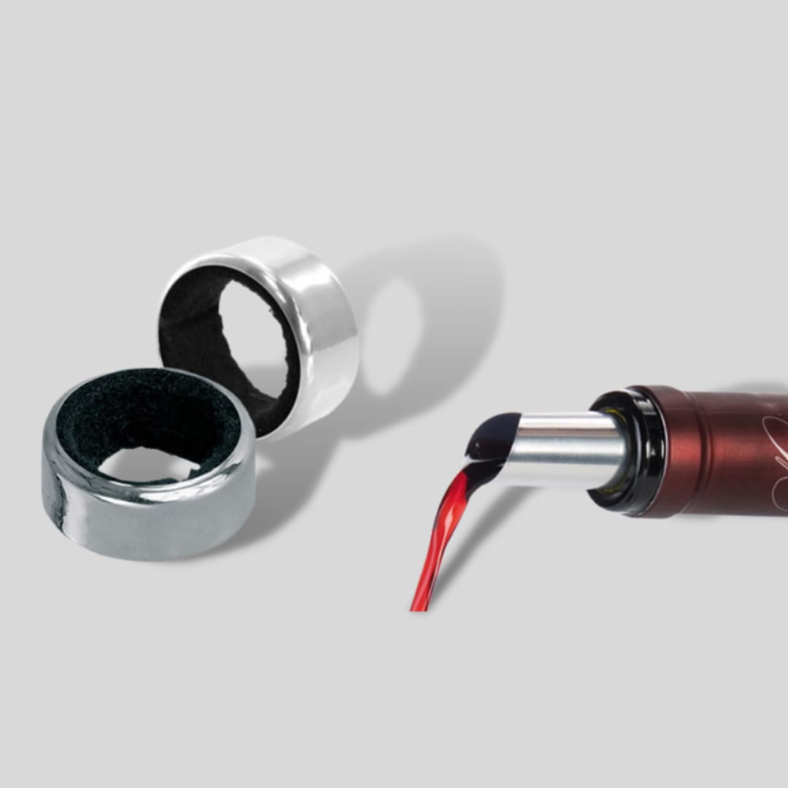

Decantador
Más allá de su forma distinguida que engalana cualquier mesa, el decantador tiene dos funciones muy importantes que permiten apreciar mejor un vino. La primera es oxigenar el vino y así despertar los aromas que a veces quedan “dormidos” por permanecer encerrados en la botella, y la segunda es evitar que lleguen a la copa los sólidos que se forman en el fondo de la misma por el paso del tiempo. Esto último es lo que se denomina propiamente “decantar”, es decir, separar sólidos de líquidos.
Aireador

El aireador, al igual que el decantador, favorece el contacto del vino con el oxígeno. Su uso, sin embargo, no es equivalente al de los decantadores. La ventaja en comparación al decantador es que en menos tiempo, oxigena el vino. Existen diferentes modelos, pero pueden resumirse en: los que se colocan en la botella y los que se usan en la copa. En ambos casos el vino, al circular por el aireador, se oxigena gracias a la abertura del accesorio.
Otra ventaja es que sólo se oxigena el vino que se tomará y no la botella en su totalidad
Cortagotas
El cortagotas cumple una función totalmente práctica: evita que al servir una copa de vino algunas gotas resbalen por la botella y manchen la etiqueta, el mantel o incluso la ropa de la persona que está sirviendo.
Sacacorchos


La gran mayoría de vinos están cerrados con corcho. Hay sacacorchos de muchos tipos: de palanca, plegables, de alas, de pared, incluso eléctricos o de aire comprimido. Para nosotros, el más cómodo, fácil de usar y sencillo es el sacacorchos plegable de dos tiempos.
Cortacápsulas

Los corta-cápsulas son un invento cómodo y útil. En un segundo y un giro de muñeca puedes desprenderte de la cápsula de la botella. Aun así, es totalmente prescindible si tenemos a mano un cuchillo o navaja. Incluso con la punta del sacacorchos se puede cortar bien la cápsula.
Termómetro

Si querés beber el vino a su temperatura correcta, podés optar por un termómetro para medir sus grados.
Recordá, blancos y rosados deben estar alrededor de los 7 grados mientras que los vinos tintos deben consumirse entre los 14-18 grados dependiendo de su envejecimiento.